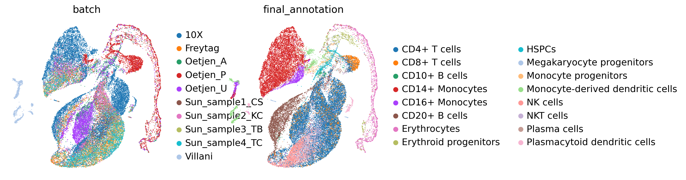
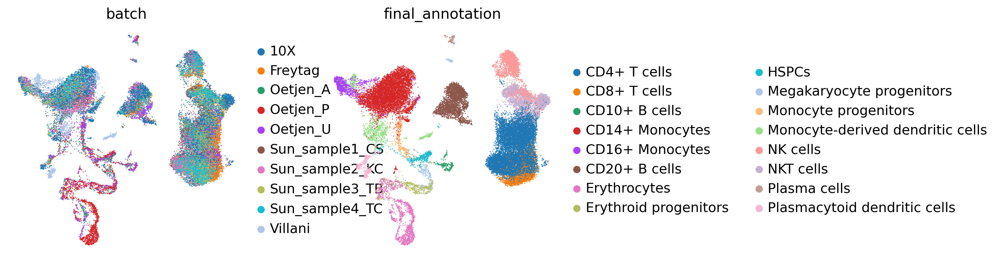
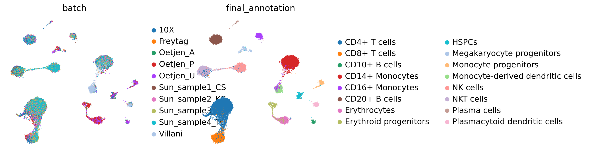
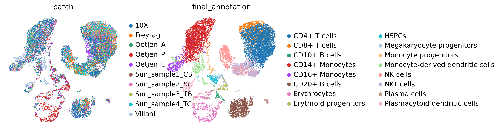
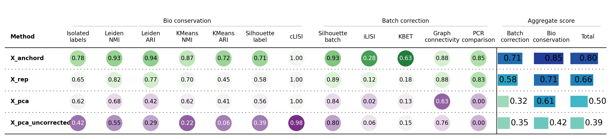

Integrate Human Immune Cell datasets with STEP and generate batch-corrected embeddings and gene expressions.#
[1]:
import scanpy as sc
import scanpy.external as sce
import numpy as np
import seaborn as sns
import matplotlib.pyplot as plt
from scib_metrics.benchmark import Benchmarker, BioConservation, BatchCorrection
import pandas as pd
from step import scModel
sc.set_figure_params(
dpi_save=300,
frameon=False,
dpi=100,
)
def get_umap(adata,
batch_key,
label_key,
embed_key='X_rep',
save=False,
show=True,
figdir='figures'):
if embed_key not in adata.obsm.keys():
print(f"{embed_key} not found in adata.obsm.keys()")
return
sc.pp.neighbors(adata, use_rep=embed_key)
sc.tl.umap(adata)
if not save:
sc.pl.umap(adata, color=[batch_key, label_key])
else:
sc.settings.figdir = figdir
for key in [batch_key, label_key]:
sc.pl.umap(adata, color=key, save=f"_{embed_key}_{key}_umap.png", show=show)
[2]:
file_path = '/data/scib_benchmark/Immune_ALL_human.h5ad'
batch_key = 'batch'
cell_state_key = 'final_annotation'
adata = sc.read_h5ad(file_path)
sc.pp.pca(adata, layer='counts', n_comps=50)
sc.pp.neighbors(adata, use_rep='X_pca')
sc.tl.umap(adata)
sc.pl.umap(adata, color=[batch_key, cell_state_key])

[3]:
stepc = scModel(
file_path=file_path,
layer_key='counts',
batch_key=batch_key,
class_key=cell_state_key,
decoder_type='nb',
module_dim=30,
hidden_dim=64,
n_modules=32,
)
Checking layer key
Trying seurat_v3 for hvgs
not log_transformed
================Dataset Info================
Batch key: batch
Class key: final_annotation
Number of Batches: 10
Number of Classes: 16
Gene Expr: (33506, 2000)
Batch Label: (33506,)
============================================
[4]:
stepc.run(epochs=400, batch_size=1024, split_rate=0.2, tune_epochs=100)
================Dataset Info================
Batch key: batch
Class key: final_annotation
Number of Batches: 10
Number of Classes: 16
Gene Expr: (33506, 2000)
Batch Label: (33506,)
============================================
Performing category random split
Training size for 10X: 8581
Training size for Freytag: 2677
Training size for Oetjen_A: 2068
Training size for Oetjen_P: 2612
Training size for Oetjen_U: 2984
Training size for Sun_sample1_CS: 1380
Training size for Sun_sample2_KC: 1824
Training size for Sun_sample3_TB: 1922
Training size for Sun_sample4_TC: 1936
Training size for Villani: 817
train size: 26801
valid size: 6705
Current Mode: multi_batches: ['gene_expr', 'batch_label']
Current Mode: multi_batches: ['gene_expr', 'batch_label']
100%|██████████| 400/400 [15:08<00:00, 2.27s/epoch, kl_loss=1.215, recon_loss=732.441, val_kl_loss=1.246/0.386, val_recon_loss=758.566/753.340]
Current Mode: multi_batches: ['gene_expr', 'batch_label']
Current Mode: multi_batches: ['gene_expr', 'batch_label']
Current Mode: multi_batches_with_ct: ['gene_expr', 'class_label', 'batch_label']
================Dataset Info================
Batch key: batch
Class key: final_annotation
Number of Batches: 10
Number of Classes: 16
Gene Expr: (33506, 2000)
Class Label: (33506,)
Batch Label: (33506,)
============================================
Performing category random split
Training size for CD4+ T cells: 8808
Training size for CD8+ T cells: 1746
Training size for CD10+ B cells: 165
Training size for CD14+ Monocytes: 5186
Training size for CD16+ Monocytes: 797
Training size for CD20+ B cells: 2298
Training size for Erythrocytes: 1201
Training size for Erythroid progenitors: 370
Training size for HSPCs: 378
Training size for Megakaryocyte progenitors: 216
Training size for Monocyte progenitors: 342
Training size for Monocyte-derived dendritic cells: 809
Training size for NK cells: 1835
Training size for NKT cells: 2196
Training size for Plasma cells: 103
Training size for Plasmacytoid dendritic cells: 348
train size: 26798
valid size: 6708
Current Mode: multi_batches_with_ct: ['gene_expr', 'class_label', 'batch_label']
Current Mode: multi_batches_with_ct: ['gene_expr', 'class_label', 'batch_label']
24%|██▍ | 24/100 [00:56<02:50, 2.25s/epoch, cl_loss=0.020, kl_loss=0.009, val_cl_loss=0.782/0.462, val_kl_loss=0.009/0.009]Early Stopping triggered
24%|██▍ | 24/100 [00:56<02:57, 2.34s/epoch, cl_loss=0.020, kl_loss=0.009, val_cl_loss=0.782/0.462, val_kl_loss=0.009/0.009]
Current Mode: multi_batches: ['gene_expr', 'batch_label']
EarlyStopping counter: 20 out of 20
EarlyStopping counter: 4 out of 1
Current Mode: multi_batches_with_ct: ['gene_expr', 'class_label', 'batch_label']
Current Mode: multi_batches: ['gene_expr', 'batch_label']
Current Mode: multi_batches: ['gene_expr', 'batch_label']
Current Mode: multi_batches: ['gene_expr', 'batch_label']
Current Mode: multi_batches: ['gene_expr', 'batch_label']
[5]:
stepc.adata.obsm['X_pca_uncorrected'] = adata.obsm['X_pca']
adata = stepc.adata
get_umap(adata, batch_key, cell_state_key,
save=False,)
get_umap(adata, batch_key, cell_state_key,
embed_key='X_anchord',
save=False,)


[6]:
stepc.regress_out(batch_used='all', library_size=1e5)
sc.pp.pca(adata, layer='corrected_counts', n_comps=50)
sc.pp.neighbors(adata, key_added="pca")
sc.tl.umap(adata, neighbors_key="pca",)
sc.pl.umap(adata, color=[batch_key, cell_state_key,])

[7]:
bioc = BioConservation(nmi_ari_cluster_labels_leiden=True)
bm = Benchmarker(
adata,
batch_key=batch_key,
label_key=cell_state_key,
embedding_obsm_keys=["X_rep", "X_anchord", "X_pca", "X_pca_uncorrected"],
n_jobs=-1,
bio_conservation_metrics=bioc,
)
bm.benchmark()
bm.plot_results_table(min_max_scale=False)
Computing neighbors: 0%| | 0/4 [00:00<?, ?it/s]
Computing neighbors: 100%|██████████| 4/4 [00:29<00:00, 7.33s/it]
Embeddings: 0%| | 0/4 [00:00<?, ?it/s]WARNING:jax._src.xla_bridge:An NVIDIA GPU may be present on this machine, but a CUDA-enabled jaxlib is not installed. Falling back to cpu.
Embeddings: 100%|██████████| 4/4 [07:19<00:00, 109.85s/it]

[7]:
<plottable.table.Table at 0x7fcaac525960>
[ ]: